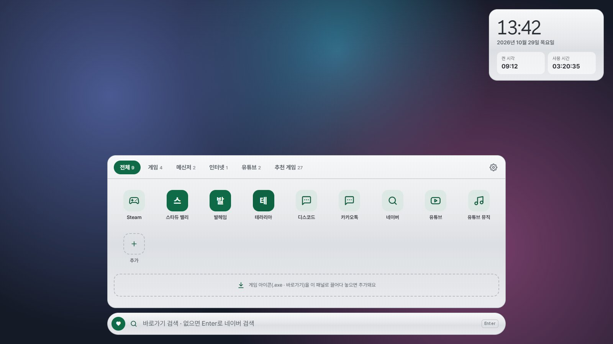
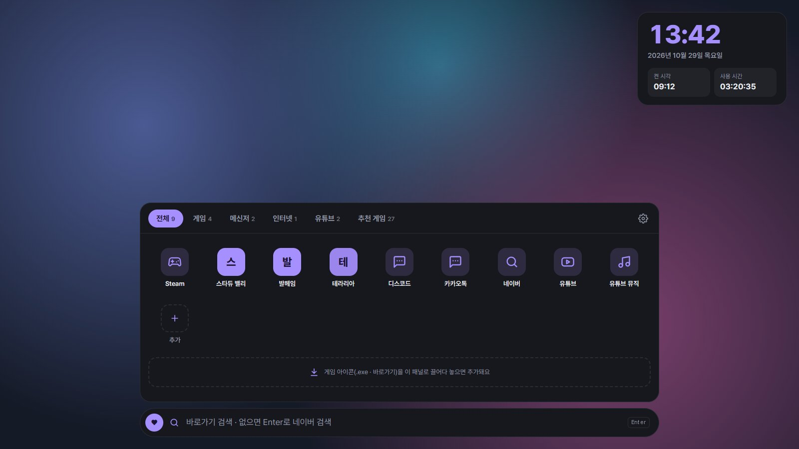
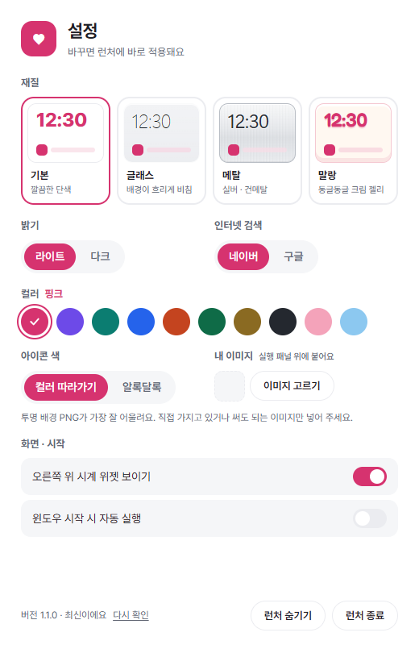
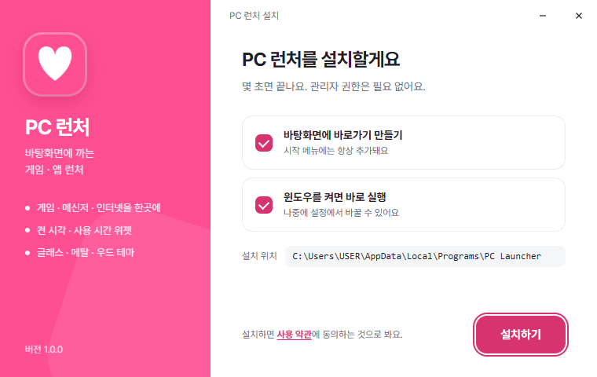

무엇을 하나요
자주 여는 건 전부 한곳에
PC방 런처처럼 쓰되, 내 바탕화면은 그대로.
바탕화면 위젯
배경화면 위에 위젯만 떠 있어요. 게임을 켜면 그 아래로 깔리고, Win+D를 눌러도 남아 있어요.
바탕화면 정리
바탕화면의 파일 · 폴더를 버튼 하나로 보관함에 넣고 런처에서 열어요. 내 PC · 휴지통도 런처 안에.
헤드셋 ↔ 스피커 · 마이크
출력 장치 전환, 음량, 마이크 켜기 · 끄기를 시계 아래에서. 단축키로 게임 중에도 바로 바꿔요.
내 마음대로 탭
탭을 추가하고 이름 바꾸기 · 순서 바꾸기 · 삭제까지. 나만의 분류로 정리해요.
끌어다 놓으면 추가
게임 아이콘(.exe · 바로가기)을 패널로 끌어다 놓으면 실제 아이콘까지 가져와요.
검색 한 번에
아무 데서나 글자를 치면 바로 찾아요. 없으면 Enter로 네이버 · 구글 · 유튜브 검색.
켠 시각 · 사용 시간
오늘 언제 켰는지, 얼마나 썼는지 시계 위젯에. 절전에서 깨운 시각까지 알아서 계산해요.
테마 80가지 조합
기본 · 글래스 · 메탈 · 말랑 재질에 라이트 · 다크, 컬러 10가지. 내 이미지 스티커도 붙일 수 있어요.
가볍고, 알아서 최신으로
숨겨 두면 거의 쉬어요. 새 버전이 나오면 톱니바퀴에 표시되고, 누르면 바로 업데이트돼요.
테마
재질 · 밝기 · 컬러를 따로 골라요
설정에서 바꾸는 즉시 바탕화면에 반영돼요.


설정 창 하나에서 전부
- 재질기본(단색) · 글래스(배경이 흐리게 비침) · 메탈(실버 · 건메탈) · 말랑(동글동글 크림 젤리)
- 밝기라이트 · 다크
- 컬러핑크 · 라벤더 · 민트 · 블루 · 코랄 · 그린 · 골드 · 모노 · 말랑핑크 · 하늘
- 꾸미기아이콘 색, 내 이미지 스티커, 시계 위젯 켜고 끄기

설치 방법
1분이면 끝나요
관리자 권한 없이 내 계정에만 설치돼요.
“PC 보호” 창이 뜨면
새로 나온 프로그램이라 Windows가 한 번 확인해요. 추가 정보를 누르고 실행을 눌러 주세요.
설치하기 누르기
바탕화면 바로가기와 자동 실행을 고르고 설치하기. 끝나면 바로 바탕화면에 깔려요.

업데이트는 따로 받지 않아도 돼요. 새 버전이 나오면 런처의 톱니바퀴에 빨간 점이 생기고, 설정 창에서 업데이트를 누르면 알아서 바뀌어요. 추가한 바로가기와 테마는 그대로 남아요.
처음 쓰는 법
이것만 알면 다 써요
게임 아이콘을 끌어다 놓기
바탕화면이나 폴더의 게임 아이콘을 실행 패널로 끌어다 놓으면 추가돼요. + 추가에서 직접 고를 수도 있어요.
우클릭으로 정리
아이콘을 우클릭하면 이름 바꾸기, 다른 탭으로 옮기기, 삭제. 실수로 지워도 되돌리기가 떠요.
그냥 타이핑하면 검색
어디서든 글자를 치면 검색창으로 가요. Enter로 실행, Ctrl+1~6로 탭 이동, Esc로 지우기.
톱니바퀴에서 꾸미기
패널 오른쪽 위 톱니바퀴를 누르면 테마 · 검색 엔진 · 자동 실행 · 내 이미지를 바꿀 수 있어요.
잠깐 숨기기
설정의 런처 숨기기를 누르면 사라지고, 작업 표시줄 오른쪽 트레이의 하트 아이콘을 누르면 다시 나와요.
추천 게임도 바로
추천 게임 탭에 PLAYDATE의 협동 게임 추천이 들어 있어요. 누르면 상점 페이지가 열려요.
자주 묻는 질문
궁금한 점
“PC 보호” 경고가 뜨는데 괜찮나요?
개인이 만든 새 프로그램이라 Windows가 아직 모르는 앱이라서 뜨는 경고예요. 이 페이지에서 받은 파일이라면 추가 정보 → 실행으로 설치하면 돼요. 업데이트할 때는 파일의 지문(SHA-256)을 확인한 뒤에만 실행해요.
인터넷이 꼭 필요한가요?
런처는 인터넷 없이도 동작해요. 새 버전 확인(6시간에 한 번)과, 아주 오래된 Windows 10에서 WebView2를 처음 설치할 때만 인터넷을 써요.
제 정보를 어디로 보내나요?
보내지 않아요. 바로가기 목록과 설정은 이 PC에만 저장돼요. 새 버전 확인 때 이 사이트의 버전 파일 하나만 읽어요.
컴퓨터가 느려지지 않나요?
가만히 있을 때 CPU는 거의 쓰지 않고, 메모리는 웹 브라우저 탭 하나 정도(약 110MB)예요. 게임을 켜면 런처는 그 아래에 조용히 깔려 있어요.
어떻게 지우나요?
Windows 설정 › 앱 › 설치된 앱에서 “PC 런처”를 찾아 제거하면 돼요. 바로가기와 자동 실행까지 깔끔하게 지워지고, 원하면 설정 데이터도 함께 지울 수 있어요.
맥이나 휴대폰에서도 되나요?
지금은 Windows 10 · 11 전용이에요.
업데이트 내역
무엇이 바뀌었나요
불러오는 중…